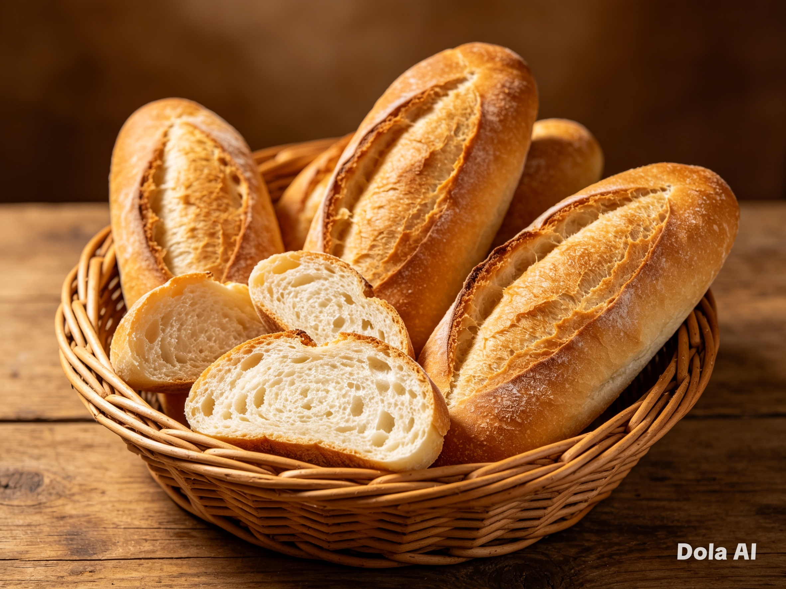
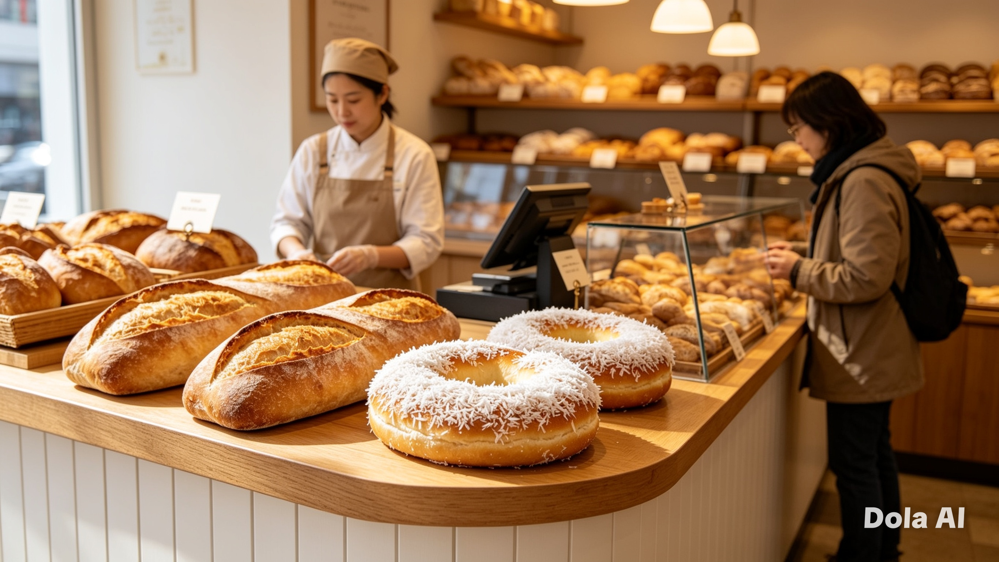
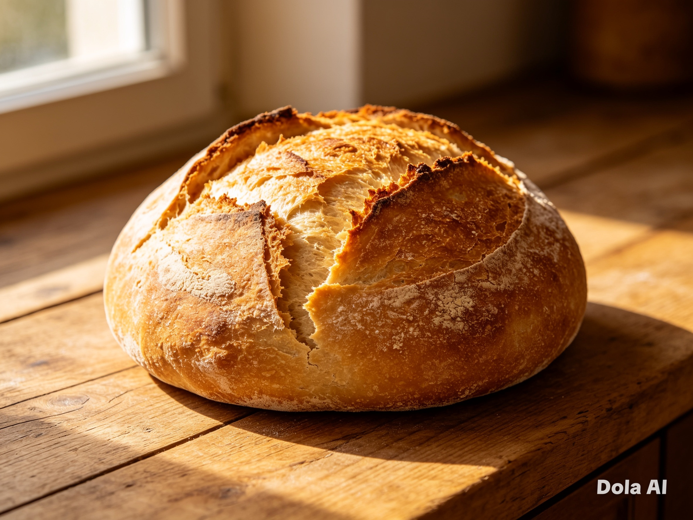
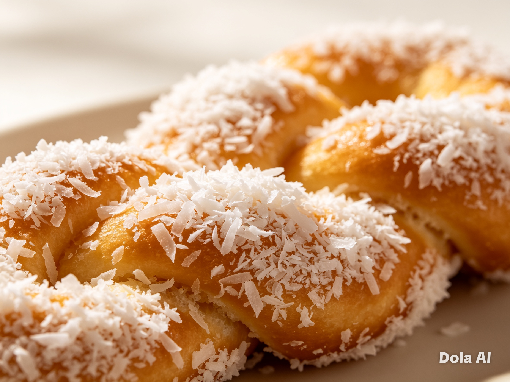
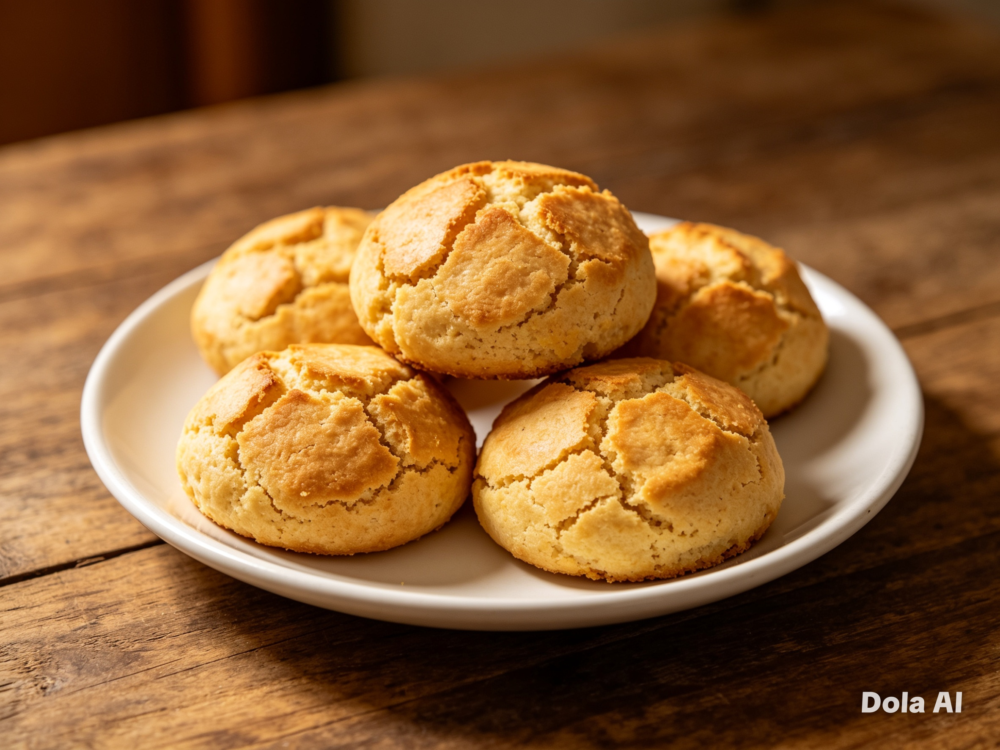

O Favorito do Dia
Pão Francês
O clássico do café da manhã brasileiro. Casca vitrificada extremamente crocante e o miolo mais leve e aerado da região.
Pronto às 06h & 17h

Tradição artesanal, fermentação lenta e fornadas quentinhas saindo a toda hora. Sinta o aroma inconfundível do verdadeiro pão feito por quem ama o que faz.
Feitos todos os dias com receitas históricas passadas de geração em geração, utilizando insumos puros e fermentos naturais selecionados.

O clássico do café da manhã brasileiro. Casca vitrificada extremamente crocante e o miolo mais leve e aerado da região.

Miolo robusto, de textura ligeiramente ácida e casca grossa dourada, perfeita para saborear com azeite ou preparar sopas quentinhas.

Trança doce extremamente macia, regada com uma finíssima cobertura de calda e coco ralado fresquíssimo. Conforto em cada mordida.

A tradicional broa do interior. Textura macia e com aquele toque rústico de milho moído na hora. Acompanhamento impecável para o café.

Pães frescos preparados artesanalmente com rigor e carinho na nossa bancada de fervura diária.
"Um pão de verdade não pede pressa. Ele pede tempo, toque gentil e respeito aos ciclos naturais da vida."
Nossa tradição começa no silêncio da madrugada. Com paciência, farinha altamente selecionada e fermentação lenta natural (Levain), criamos pães de casca rústica, dourada e miolo incrivelmente macio.
Cada fornada é um profundo tributo às nossas origens ancestrais, trazendo para a sua mesa aquele calor acolhedor que resgata as mais doces memórias de infância. Na Padaria, acreditamos que comer pão é celebrar a vida em sua forma mais simples, honesta e deliciosa.
Feito com paixão humana
Sem aditivos ou químicos
Crocância inigualável
Nosso pão francês artesanal assa diariamente nos horários sagrados das 06h00 e das 17h00. Venha buscar o seu trincando de quente!
Pães quentinhos descansando e preparando para o forno!
Nossa equipe trabalha de forma incansável para assegurar entregas precisas nos seguintes horários:
Ideal para acompanhar seu café com leite matinal. O início revigorante que seu dia merece.
A que enche a rua com cheiro irresistível no fim de tarde. O lanche perfeito do seu retorno ao lar.
*Obs: Em feriados e domingos excepcionais, acompanhamos o cronograma de funcionamento especial detalhado na seção abaixo.
Estamos de portas abertas todos os dias esperando por você com pão fresquinho e um sorriso acolhedor no rosto.
Verificando funcionamento agora.